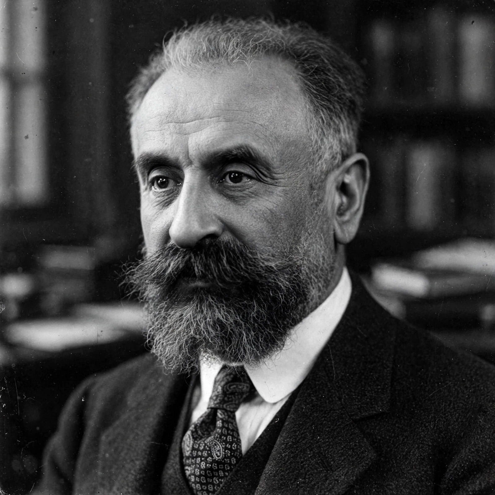

Born: 10 May 1872, Épinal, France
Died: 10 February 1950, Paris
Marcel Mauss was a French sociologist and anthropologist, nephew and collaborator of Émile Durkheim, regarded as a founder of modern ethnology in France and a central figure in social theory.
His most famous work, The Gift (1925), analysed gift exchange in archaic societies — potlatch, kula — arguing that gifts create obligations to give, to receive and to reciprocate, binding persons and groups in "total social facts" that are simultaneously economic, legal, religious and moral.
With Henri Hubert he wrote on sacrifice and magic; his essay on "techniques of the body" (1934) founded the anthropology of embodiment; his work on the category of the person influenced later thinkers including Claude Lévi-Strauss, whom he directly mentored. Mauss also co-founded institutions for French ethnology and was politically active as a socialist.